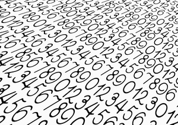

Para efeitos da nota atribuída à resolução de exercícios ao longo do semestre - Submeter até 23:59 de 1 de Maio
(o problema continuará depois disponível para submissão, mas sem contar para a nota)
[para perceber o contexto do problema deve ler o guião da aula #05]
O Pedro e a Luísa adoram puzzles numéricos! O seu mais recente passatempo passa por formar capicuas, ou sejam números cujo inverso é igual a ele próprio. Dito de outra forma, são números que ficam iguais quando são lidos da direita para a esquerda ou da esquerda para a direita. Por exemplo, todos os seguintes números são capicuas: 4224, 58985, 3, 101 ou 123454321.
O jogo consiste em começar num número qualquer e depois adicionar a menor quantidade de dígitos possível para transformar o número numa capicua. Os dígitos podem ser adicionados em qualquer parte do número. Aqui ficam alguns exemplos de como jogar:
| Número Inicial |
Mín. Dígitos Adicionar |
Exemplo de Capicua Formada |
|---|---|---|
| 10 | 1 | 101 |
| 678 | 2 | 87678 |
| 2132 | 1 | 21312 |
| 12321 | 0 | 12321 |
| 6241367 | 4 | 76314241367 |
| 424211 | 3 | 114242411 |
O Pedro e a Luisa estão sempre a tentar perceber se realmente usaram o menor número possível de inserções de dígitos e precisam da tua ajuda.
Escreva um programa que, dado um conjunto de N números, descubra para cada um deles qual a menor quantidade de dígitos a adicionar a cada um deles para os transformar numa capicua.
Na primeira linha vem um número N, indicando a quantidade de números de considerar. Seguem-se N linhas, cada uma com um número Ci indicando um número inicial a partir do qual se quer chegar a uma capicua.
N linhas, cada uma com um número inteiro indicando a quantidade mínima de dígitos a adicionar ao número respectivo para chegar a uma capicua. A i-ésima linha do output deve corresponder ao i-ésimo número do input.
São garantidos os seguintes limites em todos os casos de teste que irão ser colocados ao programa:
| 1 ≤ N ≤ 100 | Quantidade de números a considerar | |
| 0 ≤ Ci < 10100 | Número a transformar em capicua (pode ter 100 dígitos) |
6 10 678 2132 12321 6241367 424211
1 2 1 0 4 3
O exemplo de input corresponde à tabela dada no enunciado do problema.
Desenho e Análise de Algoritmos (CC2001)
DCC/FCUP - Faculdade de Ciências da Universidade do Porto